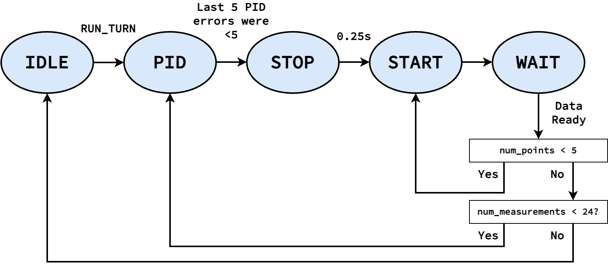
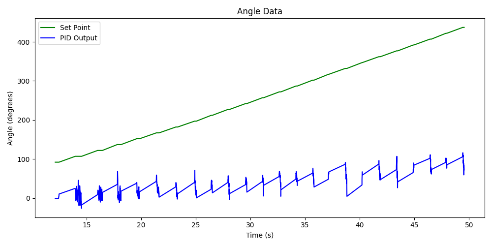
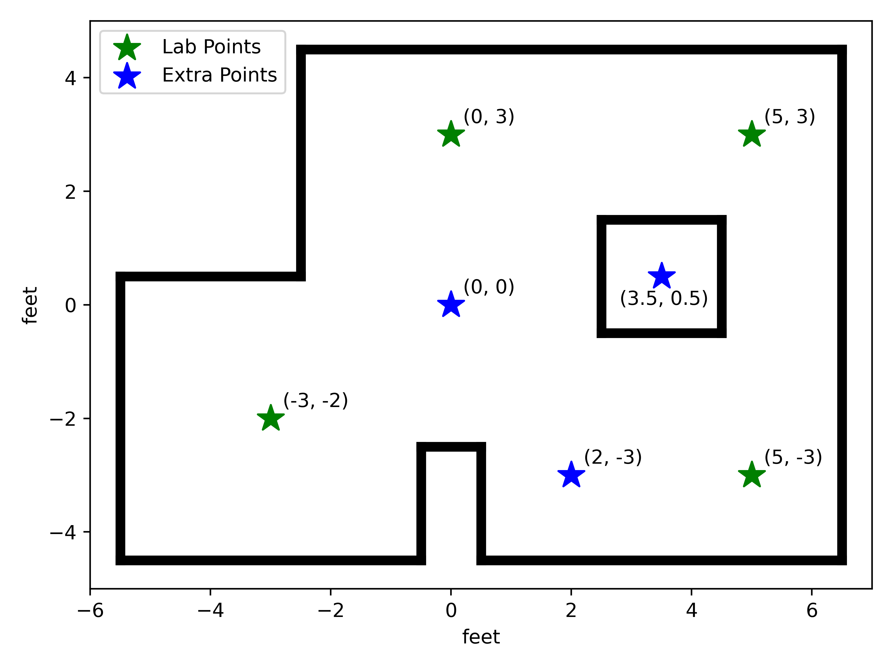
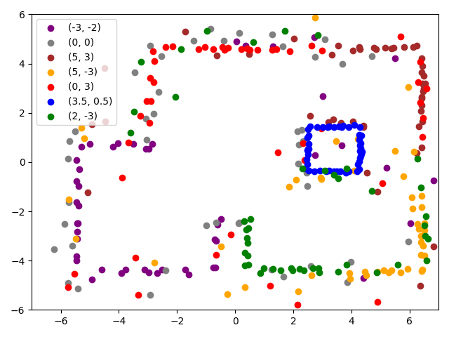

Lab 9: Mapping
This lab focused on combining many previous components to map an obstacle setup in the lab, including using a PID controller to achieve a specific angle, as well as the ToF sensor to measure the distance at that angle
Angle Wrapping
For this lab, I re-used my DMP object from Lab 6 to obtain a low-noise angle measurement for our yaw. However, the DMP only reports its angle in the range \(-180^\circ\) to \(180^\circ\). If we fed this directly into our PID controller, and tried to achieve a set point of \(180^\circ\), it might overshoot a bit, see an angle of \(-180^\circ\), and suddenly have a high error to keep going instead of reversing, resulting in the car spinning.
To avoid this, I created a function that checked the last reported angle, and used that to “correct” our current angle to avoid wrapping:
We first correct our angle by checking if there was a large difference between our last angle and the current (if the last angle was largely positive, in this case beyond \(90^\circ\) in magnitude, but our current angle is the opposite sign, we most likely overflowed)
We then correct based on the number of “wraps” that already took place
double last_wrap_angle = 0;
int num_wraps = 0;
// Take a "wrapped" angle and return an "unwrapped" angle
double angle_no_wrap( double curr_angle )
{
// Adjust angle based on last angle
if (( curr_angle < 0 ) && ( last_wrap_angle > 90 )) {
// Overflow
curr_angle = curr_angle + 360;
}
else if (( curr_angle > 0 ) && ( last_wrap_angle < -90 )) {
// Underflow
curr_angle = curr_angle - 360;
}
// Adjust angle based on wrapping
if( num_wraps > 0 ){
for( int i = 0; i < num_wraps; i++ ){
curr_angle = curr_angle + 360;
}
} else if( num_wraps < 0 ){
for( int i = 0; i > num_wraps; i-- ){
curr_angle = curr_angle - 360;
}
}
// Update last angle and wrapping
last_wrap_angle = curr_angle;
num_wraps = 0;
while( last_wrap_angle > 180 ){
num_wraps++;
last_wrap_angle -= 360;
}
while( last_wrap_angle < -180 ){
num_wraps--;
last_wrap_angle += 360;
}
return curr_angle;
}
This yielded an angle reading that didn’t suffer from wrapping, allowing our PID controller to function well:
{kind=link}
State Machine
From here, Ned needed to continuously rotate and obtain distance measurements at a series of angles. I chose to obtain 24 measurements (resulting in \(15^\circ\) increments), and utilized a state machine to perform them:
{kind=link}
This state machine is encapsulated in the measure_step function,
which is run from the main loop:
void measure_step()
{
curr_time = millis();
switch ( curr_state ) {
case IDLE:
...
break;
case PID:
...
break;
case STOP:
...
break;
case WAIT:
...
break;
default:
break;
}
}
// In `main`...
while ( central.connected() ) {
// Send data
write_data();
// Read data
read_data();
// Update dmp
dmp.update();
measure_step();
}
IDLE
This is our stating state; once we receive the BLE command RUN_TURN,
we start gathering measurements by moving to PID. Here, we only
reset our wrapping and number of collected measurements.
case IDLE:
last_wrap_angle = 0;
num_wraps = 0;
num_measurements = 0;
break;
// In `handle_command`
case RUN_TURN:
reset_map_data(); // Reset our mapping data
start_pid(); // Reset our set point to our current angle
curr_state = PID;
break;
PID
This is where we use our PID controller to achieve the setpoint angle; this is very similar to Lab 6, except using our unwrapped angle (though still logging the wrapped angle for absolute yaw)
To know when we’ve achieve the angle, the last 5 PID errors (a.k.a.
difference between our current and desired angle)
are stored; when they’re all sufficiently small (I used \(< 5\)),
we stop the car, log the time, and move to STOP
double last_angles[5];
bool run_pid_step()
{
int curr_motor_pwm;
float curr_kp_term, curr_ki_term, curr_ki_windup, curr_kd_term,
curr_total_term;
double curr_angle;
bool data_ready;
dmp_msg_t dmp_msg = dmp.yaw();
curr_angle = dmp_msg.angle;
data_ready = dmp_msg.new_data;
if ( data_ready ) {
last_angle_valid = true;
}
bool pid_done;
double pid_angle;
if ( last_angle_valid ) {
pid_angle = angle_no_wrap( curr_angle );
pid.update( pid_angle );
curr_total_term = pid.get_control();
curr_kp_term = pid.terms.kp_term;
curr_ki_term = pid.terms.ki_term;
curr_ki_windup = pid.terms.ki_windup_term;
curr_kd_term = pid.terms.kd_term;
curr_motor_pwm = pid.scale( curr_total_term );
last_angles[4] = last_angles[3];
last_angles[3] = last_angles[2];
last_angles[2] = last_angles[1];
last_angles[1] = last_angles[0];
last_angles[0] = pid_angle;
pid_done = true;
for ( int i = 0; i < 5; i++ ) {
if ( abs( last_angles[i] - pid.get_setpoint() ) > 5 ) {
pid_done = false;
}
}
if ( curr_motor_pwm > 0 ) {
car.right( curr_motor_pwm );
}
else {
car.left( -1 * curr_motor_pwm );
}
log_pid_data( curr_time, pid.get_setpoint(), data_ready, curr_angle,
curr_kp_term, curr_ki_term, curr_ki_windup,
curr_kd_term, curr_total_term, curr_motor_pwm );
}
else {
pid_done = false;
}
return pid_done;
}
case PID:
if ( run_pid_step() ) { // We've achieve the angle
car.stop();
stop_time = millis();
curr_state = STOP;
}
break;
STOP
I noticed that the car needs some time to physically stop before starting
ranging on our ToF distance sensor (or else the data will be noisy).
Accordingly, STOP waits for a quarter-second before moving on to
START
case STOP:
if ( curr_time - stop_time > 250 ) {
curr_sate = START;
num_points = 0;
}
break;
START
In START, we start ranging to obtain a measurement, then move on to
WAIT to get the result
case START:
tofs.sensor1.startRanging();
curr_state = WAIT;
break;
WAIT
Finally, WAIT waits for the distance measurement. Here, we get the
average of 5 data points; if we don’t have 5 data points, we go back to
START. If we do, we log both the average distance
and the current angle (using the same data logging framework from before).
Once we have the data point, we need to check whether we need to capture
more data (a.k.a. we have fewer than 24 measurements). If so, we increment
the set point (not worrying about wrapping from our handling above), and
return to PID. Otherwise, our job is done, and we return to IDLE
case WAIT:
if ( tofs.sensor1.checkForDataReady() ) {
data_points[num_points++] = tofs.sensor1.getDistance();
if ( num_points < 5 ) {
curr_state = START;
}
else {
int avg_distance =
( data_points[0] + data_points[1] + data_points[2] +
data_points[3] + data_points[4] ) /
5;
log_map_data( curr_time, dmp.yaw().angle, avg_distance );
num_measurements++;
if ( num_measurements < 24 ) {
pid.set_setpoint( pid.get_setpoint() + 15 );
curr_state = PID;
}
else {
stop_pid();
curr_state = IDLE;
}
}
}
break;
When implemented, the PID controller from Lab 6 was able to achieve the target angle well (shown with the gaps between PID term updates, which are when we take measurements), and the robot was able to rotate roughly on-axis to achieve the measurements
{kind=link}
While the DMP doesn’t experience too much drift, the slight off-axis translation (gyrating around half the square) would mean that measurements might be off anywhere from 0 to 6 inches, averaging around 3. Later, we’ll see more error, like due to sensor noise at large distances (noting that measuring inside the box at short-range was very accurate), despite increasing our sampling period
sensor1.setTimingBudgetInMs( 200 ); // 200ms to sample
sensor2.setTimingBudgetInMs( 200 );
sensor1.setIntermeasurementPeriod( 250 ); // 250ms between samples
sensor2.setIntermeasurementPeriod( 250 );
Post-Processing
Once the data’s been collected it, we can transfer it back to Python,
similar to before with a BLE command GET_ANGLE_DATA
// In `handle_command`
case GET_ANGLE_DATA:
Serial.printf( "Getting data (%d)...\n", data_entry_idx );
for ( int i = 0; i < data_entry_idx; i++ ) {
tx_estring_value.clear();
tx_estring_value.append( data_time_entries[i] );
tx_estring_value.append( "|" );
tx_estring_value.append( data_yaw_entries[i] );
tx_estring_value.append( "|" );
tx_estring_value.append( data_distance_entries[i] );
tx_characteristic_string.writeValue( tx_estring_value.c_str() );
Serial.printf( "Sending data %d...\n", i );
}
break;
data_time = []
data_yaw = []
data_distance = []
NUM_SAMPLES = 24
i = 0
def parse_angle_data( data: str ):
data_components = data.split("|")
time = (float(data_components[0]) / 1000) # Convert to seconds
yaw = float(data_components[1]) * np.pi / 180 # Convert to radians
distance = float(data_components[2])
return time, yaw, distance
def angle_data_handler(_uid, response):
global i
time, yaw, distance = parse_angle_data(response.decode())
data_time_motor.append(time)
data_yaw.append(yaw)
data_distance.append(distance)
i = i + 1
print(f"{i * 100 / NUM_SAMPLES:.2f}% done", end = '\r')
ble.start_notify(ble.uuid['RX_STRING'], angle_data_handler)
ble.send_command(CMD.GET_ANGLE_DATA, "")
Once in Python, there are a few steps we need to do to make the data usable:
Convert to 0 - 360: To get a good plot, we’ll subtract the initial angle from all measurements to be on the range \(0^\circ - 360^\circ\) (always starting our robot facing in the same direction at the start)
initial_yaw = data_yaw[0]
for i in range(len(data_yaw)):
data_yaw[i] = data_yaw[i] - initial_yaw
Account for sensor distance: Our distance measurements are offset from the center of the car (where we rotate), so we need to add this back in (I measured 75mm). I also used this to convert our measurements to feet
for i in range(len(data_distance)):
data_distance[i] += 75
# Convert to meters instead of mm
data_distance[i] = data_distance[i] * 3.28 / 1000
Convert to world frame: Right now, we have angles and distances, but we want global points. Knowing the point that our robot was placed at, we can use the sine and cosine of our angles (multiplied by the corresponding distance) to compute the global point from our position.
from math import sin, cos
curr_point = np.array([-3, -2])
data_global = []
for i in range(len(data_distance)):
curr_angle = data_yaw[i]
translation = np.array([data_distance[i] * cos(curr_angle), data_distance[i] * -1 * sin(curr_angle)])
data_global.append(curr_point + translation)
data_x = [point[0] for point in data_global]
data_y = [point[1] for point in data_global]
Sine Term sign
Note that I flip the sign of the sine term; this is because yaw increases going into the ground, but our top-down world frame assumes it increases rotating out of the ground
Mapping the Lab
I mapped not only the 4 given points in the lab environment, but 3 additional points as well to help better map the space:
{kind=link}
With the data, I was able to make a polar plot in the robot frame, as well as a Cartesian plot of points in the global frame, to verify they matched expectations. For each point, I used two sets of measured data; these tended to match fairly well both with each other and the global frame (albeit with noise in the measurements)
Correcting Angle
During this step, I noticed that many measurements were slightly skewed from what we expected. This is likely due to the DMP drifting when stationary at the first point from gyroscope noise, then correcting when moving (something I observed when implementing the DMP). To fix this, I added a constant angle offset to 3-4 data sets
\((-3, -2)\)
{kind=link}
{kind=link}
\((0, 0)\)
{kind=link}
{kind=link}
\((0, 3)\)
{kind=link}
{kind=link}
\((2, -3)\)
{kind=link}
{kind=link}
\((3.5, 0.5)\)
{kind=link}
{kind=link}
\((5, 3)\)
{kind=link}
{kind=link}
\((5, -3)\)
{kind=link}
{kind=link}
From here, we can combine the points to reconstruct our lab setup:
{kind=link}
We can visually see that this is a fairly good mapping of our space, reinforced by converting it to a line map by superimposing lines on areas of high density:
# Code to add lines on the plot
lines_to_add = [
# Express as endpoints of a line -> ((x0, y0), (x1, y1))
((0.5, -4.5), (6.5, -4.5)),
((6.5, -4.5), (6.5, 4.5)),
((6.5, 4.5), (-2.8, 4.5)),
((-2.8, 4.5), (-2.8, 0.7)),
((-2.8, 0.7), (-5.5, 0.7)),
((-5.5, 0.7), (-5.5, -4.5)),
((-5.5, -4.5), (-0.7, -4.5)),
((-0.7, -4.5), (-0.7, -2.5)),
((-0.7, -2.5), (0.5, -2.5)),
((0.5, -2.5), (0.5, -4.5)),
# Box
((2.5, -0.4), (4.3, -0.4)),
((4.3, -0.4), (4.3, 1.4)),
((4.3, 1.4), (2.5, 1.4)),
((2.5, 1.4), (2.5, -0.4)),
]
for (p0, p1) in lines_to_add:
x_data = [p0[0], p1[0]]
y_data = [p0[1], p1[1]]
plt.plot(x_data, y_data, "k", linewidth = 3)
{kind=link}